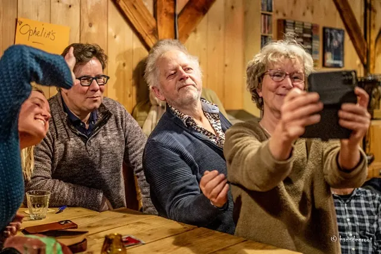

Nieuws ·
Ugenda presenteert de 9e Editie van de Nijmeegse Cultuurquiz

Ugenda, de toonaangevende cultuurwebsite van Nijmegen, kondigt met trots de negende editie aan van de Nijmeegse Cultuurquiz. Dit spannende evenement vindt plaats op zondag 28 januari, waarbij cultuurliefhebbers hun kennis kunnen testen en strijden voor de titel van ‘Beste Cultuurkenner van Nijmegen 2023’.
De quiz, geïnspireerd door het populaire pubquiz-formaat, richt zich specifiek op cultuur en uitgaansleven in Nijmegen gedurende het afgelopen jaar. Teams bestaan uit maximaal vier deelnemers, waarbij zowel cultuurmakers als -liefhebbers worden uitgedaagd om hun kennis te etaleren. Het evenement biedt een unieke kans om te netwerken, plezier te hebben en natuurlijk om de felbegeerde trofee in de wacht te slepen.
Vorig jaar claimde het team van Bibliotheek Gelderland Zuid de overwinning – voor de vierde keer! Dit jaar kan jouw team deze eer opeisen. De winnaars ontvangen naast eeuwige roem een bijzondere culturele prijs en mogen de prestigieuze trofee een jaar lang tentoonstellen.
De quiz wordt gepresenteerd door de charismatische Peter Verstraten, die zeker zal zorgen voor een vermakelijke en memorabele avond.
Belangrijke details van het evenement:
– Datum: Zondag 28 januari
– Tijd: Start om 16:00, inloop vanaf 15:30
– Locatie: Proeflokaal Beij Ons
– Deelnamekosten: €10 per team
Mis deze kans niet om deel uit te maken van Nijmegens rijke culturele scene. Voor meer informatie en aanmelding, bezoek Ugenda’s website